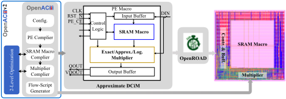
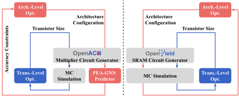
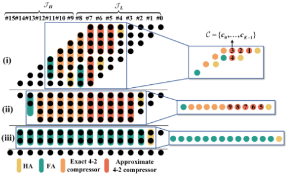
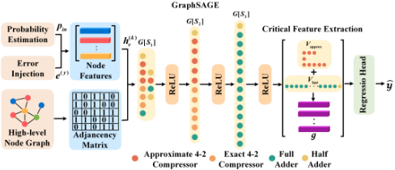
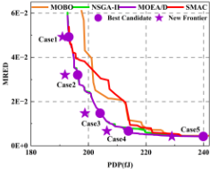
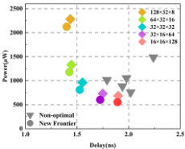
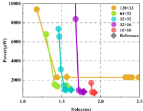
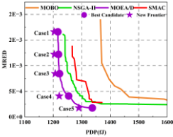
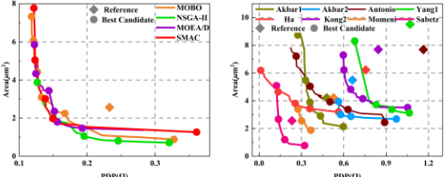

OpenACMv2：一个面向近似 DCiM 的精度约束协同优化框架
近似数字存算一体（DCiM）以算术精度换 PPA 收益，但压缩器选型、SRAM 配置与晶体管 sizing 强耦合且对 PVT/variation 敏感，传统综合+仿真单次评估需数十秒，无法支撑大规模协同优化循环。论文提出精度约束协同优化 ACCO 并实现开源框架 OpenACMv2：Level-1 用图神经网络代理 PEA-GNN 快速预测近似乘法器的 MRED/NMED 与 PPA，结合 MOEA/D、NSGA-II、SMAC、MOBO 搜索压缩器组合与 SRAM macro 参数；Level-2 用 Monte Carlo 做 PVT/variation 感知的晶体管 sizing。结果显示代理模型将评估加速 142×–464×、PPA 预测误差低于 0.3%，Level-1 取得约 50%+ PDP 降低，Level-2 再贡献个位数改善且不破坏精度预算。流程兼容 FreePDK45 与 OpenROAD/OpenSTA 并已开源，其'代理模型替代综合仿真做设计空间探索'的思路对本团队有方法学借鉴价值。
近似 DCiM 中，压缩器类型与部分积列分配、SRAM bank 组织、标准单元与 SRAM bitcell 晶体管 sizing 等设计旋钮相互耦合，精度（MRED/NMED）与 PPA 的权衡非凸且对 PVT/variation 敏感，人工调优不可行；精确评估依赖逻辑综合、时序分析与功耗仿真，单次 16-bit 查询需数十秒，无法支撑需要百万级 what-if 查询的优化循环；现有框架（AutoDCIM、SynDCIM、ARCTIC、OpenC²）面向精确算术、缺乏精度感知建模，OpenACM 也缺少架构与晶体管级的联合优化。
提出两级自顶向下分治的 ACCO 流程。Level-1（架构搜索）：将 8/16-bit 近似乘法器的压缩器分配编码为按压缩级分层的图，用分阶段 GraphSAGE 消息传递的 PEA-GNN 回归预测 MRED/NMED、delay、power、area，在 MRED/NMED 硬约束下用 MOEA/D、NSGA-II、SMAC、MOBO 等单/多目标优化器生成 accuracy-PDP Pareto 前沿；SRAM 侧用 SPICE 扫描行/列、mux ratio、array 数并按 FOM 剪枝。Level-2（电路 sizing）：对入围压缩器与 6T bitcell 做宽度分组、SPICE/Monte Carlo 评估的 PVT/variation 感知晶体管 sizing，保证功能正确且精度预算不被破坏。基于 Nangate45 开源单元库，用 OpenROAD/OpenSTA 以 5ns 时钟、10fF 负载评估。
PEA-GNN 代理精度：8-bit 设计 MRED/NMED 预测误差 2.1%/1.8%，Delay/Area/Power 误差均低于 0.3%，所有输出 R²>0.94；16-bit 设计 MRED/NMED 误差 4.7%/2.3%，PPA 偏差低于 0.25%，R²>0.95
评估加速：8-bit 单次查询 0.26s 对比传统流程 37s（142×），16-bit 0.25s 对比 116s（464×）
两级 ACCO 在精度约束下，Level-1 架构探索贡献约 50%+ 的 PDP 降低，Level-2 晶体管级优化再提供个位数 PDP 改善且精度不变
CIFAR-10 推理：MRED 预算跨越约一个数量级时 Top-1/Top-5 精度变化小于 1%；图像融合任务中 PSNR 随预算收紧相应提升，多个 Pareto 点在精度不劣于 Base 设计的同时显著降低 PDP
SRAM macro：架构级组织选择主导 PPA（Pareto 前沿呈凹形，最高 FOM 设计聚集在'肘部'），bitcell 级 sizing 仅带来有限的延迟/动态功耗改善
区别于 OpenACM（端到端近似 DCiM 编译器但无联合优化）、AutoDCIM/SynDCIM/ARCTIC/OpenC²（面向精确算术、应用无关、无精度感知建模）以及只做单层晶体管 sizing 或架构优化的已有研究，OpenACMv2 首次将应用级精度预算提升为前端设计循环的一等约束，用 GNN 代理实现近似乘法器的快速评估，并将架构探索与 PVT/variation 感知晶体管 sizing 解耦为两级协同优化；论文指出两级并发优化虽 PPA 收益相近，但复杂度更高、收敛更慢。
相关度级别：high
命中能力域：2.1 IP 架构与微架构 | 2.3 时序与物理实现 | 2.7 EDA/验证自动化与 AI 辅助
理由：直接命中 2.3 的'ML 辅助时序/功耗预测'：PEA-GNN 以低于 0.3% 的误差预测 delay/power/area 并将单次评估加速 142×–464×，正是该域列出的核心技术；同时命中 2.7 的 EDA 自动化与 AI 辅助（开源框架、OpenROAD/OpenSTA 集成、代理模型驱动的自动化搜索流程），并以 SRAM macro 行/列/mux/array 参数的 PPA 权衡探索与 workload（CIFAR-10）驱动评估命中 2.1 的架构权衡与性能建模。需注意：论文对象是近似 DCiM 计算宏，与团队的 LPDDR/HBM/UCIe 接口 IP 产品线不同，且不含 RTL 实现与验证内容，因此价值主要是方法学迁移——用代理模型替代综合/仿真循环做大规模架构参数探索、以应用级指标为硬约束的两级分治优化组织方式。
建议动作：作为方法参考存档
arXiv:2603.13042v2 [cs.LG] 2026年6月5日
Yiqi Zhou 1 , Yue Yuan 1 , Yikai Wang 1 , Bohao Liu 2 , Qinxin Mei 2 , Zhuohua Liu 3 , Shan Shen 1 , ∗ , Wei Xing 4 , ∗ , Daying Sun 1 , ∗ , Li Li 1 和 Guozhu Liu 5
3 北京航空航天大学，中国，4 谢菲尔德大学，英国
1 南京理工大学，中国，2 深圳大学，中国
5 中国电子科技集团公司第五十八研究所，中国
数字存内计算（DCiM）通过减少数据搬运来加速神经网络。近似 DCiM 能够进一步改善功耗-性能-面积（PPA），但需要在相互耦合的架构与晶体管级选择之间进行精度约束的协同优化。在 OpenYield 的基础上，我们提出了精度约束协同优化（ACCO），并给出 OpenACMv2——一个通过两级优化将 ACCO 付诸实施的开源框架：（1）以快速的基于图神经网络（GNN）的代理模型驱动 PPA 与误差评估，对压缩器组合与静态随机存取存储器（SRAM）宏参数进行精度约束的架构搜索；（2）利用蒙特卡洛方法，对标准单元和 SRAM 位单元进行考虑偏差与工艺-电压-温度（PVT）条件的晶体管尺寸优化。通过将 ACCO 解耦为架构级探索与电路级尺寸优化，OpenACMv2 集成了经典的单目标与多目标优化器，以提供出色的 PPA-精度权衡和稳健的收敛性。该工作流程与 FreePDK45 和 OpenROAD 兼容，支持可复现的评估与便捷的采用。实验表明，所提出的两级 ACCO 框架的大部分精度约束效率增益在 Level-1 阶段通过架构探索实现，带来约 50% 以上的功耗延迟积（PDP）降低；而 Level-2 的晶体管级优化在保持精度的同时进一步提供个位数的 PDP 改进，从而支持对近似 DCiM 的快速"what-if"探索。该框架已在 GitHub 上开放获取。
数字存内计算（Digital Compute-in-Memory, DCiM）通过在 SRAM 内部或附近执行低精度算术运算来加速神经网络（Neural Network, NN）工作负载，从而减少数据搬运和互连开关活动。这打破了冯·诺依曼瓶颈，并在保持与标准数字设计流程兼容的同时，带来了显著的功耗-性能-面积（Power-Performance-Area, PPA）增益 [4]。
近似计算进一步放大了这些增益：许多神经网络能够容忍中等程度的误差而不损失精度 [5, 28]。利用近似乘法器和压缩器可以显著降低
本工作受中央高校基本科研业务费专项资金（资助号：30925010605 和 30924012004）、集成电路与微系统全国重点实验室（资助号：JCYQ2310803-1）以及江苏省科技重大专项（资助号：BG2025012）资助。∗ 通讯作者。
本工作依据知识共享署名 4.0 国际许可协议（Creative Commons Attribution 4.0 International License）授权使用。DAC '26, Long Beach, CA, USA © 2026 版权归所有者/作者所有。ACM ISBN 979-8-4007-2254-7/2026/07 https://doi.org/10.1145/3770743.3804259
{shanshen,hasdysun}@njust.edu.cn,w.xing@sheffield.ac.uk

功耗和面积，但引入了一个困难的协同设计问题——需要在相互耦合的架构与晶体管选择之间平衡精度（例如平均相对误差距离（Mean Relative Error Distance, MRED）/归一化平均误差距离（Normalized Mean Error Distance, NMED））与 PPA。这些权衡是非凸的、对 PVT/偏差敏感的，并受 SRAM 配置的强烈影响，使得手工调优不切实际。自动编译器必不可少。OpenACM [3] 是首个开源的基于 SRAM 的近似存内计算（CiM）编译器，提供了端到端的 DCiM 流程（见图 1），但缺乏一个统一的框架，能够在显式精度约束与 PVT/偏差感知下联合优化架构探索与晶体管尺寸调整。更广泛而言，AutoDCIM [6]、SynDCIM [19]、ARCTIC [26] 和 OpenC 2 [8] 面向精确算术且与应用无关，缺乏精度感知建模或对近似算术的快速评估。因此，需要数百万次"what-if"查询的 ACCO 式循环是不可行的；采用传统的综合/仿真，即使单次 16 位查询也可能耗时数十秒。使挑战更加复杂的是，近似 DCiM 相比精确流程暴露出更多的可调旋钮：压缩器拓扑与位切片、部分积截断与门控、SRAM bank 配置，以及跨越标准单元与 SRAM 单元的晶体管尺寸调整。这些选择通过偏差和 PVT 相互作用。时至今日，仍然没有一个统一的、开源的优化框架能够在 ACCO 循环内联合权衡精度、拓扑与尺寸，同时提供对近似乘法器的快速评估；先前的 DCiM 专用优化研究并未解决这种精度约束下的架构-晶体管联合协同优化问题。
为弥合这一差距，我们提出了精度约束协同优化（Accuracy-Constrained Co-Optimization，ACCO），它将应用级精度预算提升为前端设计流程中的一等约束。在 OpenYield [20] 和 OpenACM [3] 的基础上，OpenACMv2 通过两级流程实现了 ACCO：先在精度预算下进行架构探索，随后对标准单元和存储单元进行考虑偏差/PVT 的电路尺寸优化。OpenACMv2 集成了近似乘法器性能的图神经网络（GNN）代理模型以实现快速设计空间探索，并支持经典的单目标与多目标优化器。这种自顶向下的分治策略实现了高效搜索、强有力的 PPA-精度权衡以及稳健的收敛性。该工作流程完全开源，并与 FreePDK45 [22] 和 OpenROAD [1] 兼容。OpenACMv2 的主要贡献如下：
神经网络对数值噪声表现出很强的容忍度，中等程度的扰动通常不会影响任务级精度 [4, 5, 28]。这一特性使得当计算在静态随机存取存储器（SRAM）阵列附近或内部执行时，可以用算术精度换取功耗、性能与面积（PPA）效率的提升。在数字存内计算（DCiM）系统中，这种近似带来了可观的能耗收益，同时仍与标准数字设计流程保持兼容 [25]。
DCiM 引入了两个架构层面的自由度，显著扩展了设计空间并支持细粒度的权衡：(1) 在各部分积（PP）列间分配多种类型的近似压缩器；(2) 选择哪些 PP 列采用近似压缩器、哪些采用精确压缩器（例如，对较低有效位的列进行近似，而保持较高有效位的列为精确，见图 3）。这种灵活性使得能够构建精度和能耗可调的乘法器，以满足应用级约束。然而，探索这一庞大的组合空间缺乏快速、高保真的评估手段。精确的 PPA/误差估计通常需要对每种配置分别进行逻辑综合、时序分析和功耗仿真，这阻碍了高效的内层循环搜索。
尽管有这些优势，设计一个在满足明确精度预算的同时优化 PPA 的 DCiM 处理引擎（PE）仍然极具挑战性。乘法器在 DCiM PE 中同时主导着计算误差和能耗。数十年的研究提出了多种具有不同误差/PPA 特性的近似 4-2 压缩器和乘法器 [2, 11, 16, 17, 21, 24]；Kim 和 Del Barrio [14] 表明，组合互补的压缩器可以减少偏差，但仅在受限的设置下有效。
除架构选择之外，近似乘法器还可以通过晶体管级优化得到进一步改进。对于每一类压缩器，器件尺寸调整、门分解以及低阈值电压（LVT）/高阈值电压（HVT）分配都可以降低延迟、能耗和面积。在实践中，这会带来定制化的标准单元实现，而非仅仅依赖现成的门电路；架构-电路协同优化则将能效推向帕累托前沿。

异构压缩器分配、选择性 PP 列近似、晶体管尺寸调整以及 SRAM 配置共同构成了一个庞大且非凸的设计空间，现有的优化算法无法对其进行规模化处理。与此同时，大多数框架要么专注于晶体管尺寸调整，要么专注于架构级优化，并且缺乏面向 DCiM 系统的精度感知评估。在实践中，同时优化架构和晶体管参数可以获得与两级自顶向下的精度约束协同优化（ACCO）策略相近的 PPA 收益，但会显著增加复杂度并减缓收敛速度。因此，我们采用一种两级方法，在明确的精度预算下将架构探索与器件尺寸调整解耦。
在存储器方面，SRAM 宏的参数——行/列切分、阵列数量和多路选择比——在固定容量预算下决定访问延迟与能耗 [25]。位单元的尺寸设计可进一步调节性能，但也会影响 PVT 敏感度和良率稳定性。跨宏参数与尺寸设计进行架构-晶体管协同优化，可为 DCiM 宏带来最优 PPA。
这些挑战促使我们将 DCiM PE 视为一等优化目标。OpenACMv2 采用自顶向下的分治策略实现 ACCO：（1）在压缩器组合、PP 列近似和 SRAM 宏参数上进行架构探索；（2）针对逻辑单元和存储单元进行考虑偏差/PVT 的晶体管尺寸设计；（3）通过 PEA-GNN 代理模型进行快速性能预测，以避免代价高昂的仿真。
图 2 展示了跨近似乘法器与 SRAM 宏的两级自顶向下工作流程。顶层利用轻量级模型和 GNN 代理模型快速探索架构，以筛选候选设计。底层执行考虑偏差/PVT 的晶体管调优，以精化入围的设计。
近似乘法器优化。在顶层，我们利用由图神经网络（GNN）代理模型引导的高效搜索来确定压缩器组合与列级近似模式；我们快速估计 PPA 与误差，以对候选进行排序。在底层，我们对选定的压缩器执行考虑偏差/PVT 的晶体管尺寸设计，在保持功能正确性的同时进一步优化功耗延迟积（PDP）与面积，并增强跨多个工艺角的鲁棒性。

SRAM 宏优化。顶层在容量预算下确定宏配置，利用 SPICE 仿真获取 PPA 并剪除被支配的候选。底层对位单元应用考虑偏差/PVT 的尺寸设计，以确保稳定性与时序。这一两级分治流程将高效搜索与 GNN 代理模型相耦合，可扩展至大规模设计空间，并在精度约束下产生高能效、考虑偏差的 DCiM。
在概述了两级流程之后，我们现在聚焦于近似乘法器。我们首先从架构级配置空间入手，随后在晶体管层面对选定的压缩器进行细化设计。
Graph/node features. For a node with 𝑛 inputs, 𝑚 outputs and variant 𝑦 , let the truth table be H ( 𝑦 ) ∈ { 0 , 1 } 2 𝑛 × 𝑚 (digital mapping of inputs to outputs). With independent inputs of marginals { 𝑝 𝑗 } 𝑛 𝑗 = 1 (bit-1 probabilities; typically 𝑝 𝑗 = 0 . 5 under uniform toggling), define the input-combination weights
and the input-probability vector of each nodes 𝒑 in = ( H ( 𝑦 ) ) ⊤ 𝝎 . Given an error vector 𝒆 ( 𝑦 ) (bit-level deviation from the exact compressor), the fused node feature is
Stage-wise message passing. Within each stage subgraph 𝐺 [ 𝑆 𝑘 ] , GraphSAGE updates embeddings by
where 𝜎 is a nonlinearity, W 𝑘 are learnable weights, and AGG 𝑘 is a neighborhood aggregator (e.g., mean). This propagates localized information along the compression flow. After 𝑇 stages, critical nodes V critical = 𝑉 approx ∪ 𝑉 last are concatenated to form a global representation 𝒈 .
Regression head. A shared MLP maps 𝒈 to predictions

with Softplus on outputs to ensure non-negativity (consistent with physical metrics).
AsshowninFig. 4, this hierarchical design yields fast, high-fidelity predictions for accuracy and PPA while aligning message passing with the compression stages.
4.1.4 Multi-Objective Optimization Algorithms. Equipped with the surrogate, we adopt the same iterative view as above. At iteration 𝑡 , select the next feasible compressor configuration x 𝑡 + 1 either by scoring candidates with 𝑎 𝑡 ( x ) or by applying an update operator 𝑈 𝑡 ; stochastic methods may accept a proposal with probability 𝐴 𝑡 . Let the objectives be f ( x ) = MRED ( x ) , PDP ( x ) . We say x ≺ y if 𝑓 𝑖 ( x ) ≤ 𝑓 𝑖 ( y ) for all 𝑖 and strictly for some 𝑗 ; the Pareto set is X ∗ and the frontier F ∗ . (i) MOEA/D [27]: scalarization-based selection x 𝑡 + 1 = arg min x 𝑠 𝝀 ( x ) (weighted Tchebycheff or weighted sum); subproblems cooperate to approximate F ∗ . (ii) NSGA-II [7]: population update x 𝑡 + 1 𝑖 = 𝑈 𝑡 ( x 𝑡 𝑖 ) with non-dominated sorting and crowding-distance selection to preserve diversity along F ∗ . (iii) SMAC [12]: surrogate-guided acquisition x 𝑡 + 1 = arg max x 𝑎 𝑡 𝑠 𝝀 ( x ) under random-forest models; effective in categorical spaces. (iv) MOBO [10, 23]: acquisition-based selection maximizing expected hypervolume improvement; balances exploration and exploitation toward higher-Pareto-quality solutions.
Together with PEA-GNN, these backends rapidly generate accuracy-PDP Pareto frontiers without costly Electronic Design Automation (EDA), improving architecture-level exploration throughput. We now transition to bottom-level transistor tuning for compressor implementations.
在完成乘法器逻辑的优化之后，我们现在将重点转向 SRAM 宏。我们首先在容量约束下进行存储体（bank）级配置，随后在晶体管层面对位单元进行调优。
作为晶体管级步骤，我们使用 OpenYield [20] 对标准 6T SRAM 位单元进行尺寸设计。我们采用与 OpenYield 相同的设置和算法：基于 SPICE 的、感知工艺-电压-温度（PVT）的蒙特卡洛分析，覆盖各 PVT 角点；对保持/读/写静态噪声容限（SNM）、读/写延迟和动态功耗的最坏情况聚合；以及一个以鲁棒性为中心的品质因数，该指标随裕量增大而提升，并对功耗、延迟和面积施加惩罚。优化遵循 OpenYield 的单目标与多目标问题形式化及求解器选择，在匹配的评估预算下确保公平、可复现的比较，并提供与架构层所选阵列组织相一致的鲁棒位单元配置。
所有实验均在配备 Intel Xeon Gold 6330 CPU（2.00 GHz）和 NVIDIA A100 GPU（40 GB）的工作站上进行。所提出的 PEA-GNN 基于 PyTorch 和 PyTorch Geometric（PyG）实现，并使用 Adam 优化器。数据集在 OpenACMv2 框架内基于 Nangate45 nm 开源单元库自动生成，其中每个综合后的设计均使用 OpenROAD 和 OpenSTA 在 5 ns 时钟周期和 10 fF 输出负载条件下进行评估。
| Metric | 8-bit.MSE ( × 10 - 4 ) | 8-bit.MRE (%) | 8-bit.R 2 | 16-bit.MSE ( × 10 - 4 ) | 16-bit.MRE (%) | 16-bit.R 2 |
|---|---|---|---|---|---|---|
| MRED | 0.52 | 2.17 | 0.998 | 2.94 | 4.73 | 0.977 |
| NMED | 9.25 | 1.84 | 0.996 | 2.66 | 2.30 | 0.959 |
| Delay | 6.52 | 0.03 | 0.969 | 7.39 | 0.22 | 0.917 |
| Area | 1.77 | 0.11 | 0.991 | 3.65 | 0.12 | 0.978 |
| Power Runtime | 2.34 0.26 (GNN) vs. | 0.30 37 (EDA) | 0.989 142 × ) | 0.86 0.25 (GNN) vs. | 0.25 116 (EDA) | 0.968 464 × ) |
| Metric | 8-bit.MSE ( × 10 - 4 ) | 8-bit.MRE (%) | 8-bit.R 2 | 16-bit.MSE ( × 10 - 4 ) | 16-bit.MRE (%) | 16-bit.R 2 |
As shown in Tab. 1, PEA-GNN closely matches EDA ground truth across all metrics. For 8-bit designs, all targets achieve MSEs below 10 - 3 , with MRED/NMED errors of 2.1%/1.8% and Delay/Area/Power errors under 0.3%. All outputs reach 𝑅 2 > 0 . 94. For 16-bit designs, accuracy remains high despite the larger space: MRED/NMED errors are 4.7%/2.3%, PPA deviations stay below 0.25%, and 𝑅 2 > 0 . 95, confirming the scalability of the stage-wise and hierarchical encoding. PEA-GNN also provides significant speedups: 0.26,s vs. 37,s for 8-bit (142 × ) and 0.25,s vs. 116,s for 16-bit (464 × ), enabling rapid evaluation of large design spaces and efficient Pareto-front exploration.
Overall, PEA-GNN attains near-EDA accuracy while accelerating design-space evaluation by several orders of magnitude, serving as an effective surrogate for approximate-multiplier optimization in OpenACMv2.
6.2.1 Top-Level Results. Fig. 5 and Fig. 6 present the Pareto frontiers of the 8/16-bit multipliers under four optimizers. MOEA/D exhibits the most stable convergence; therefore, five representative points (Case1-Case5) are selected for further analysis. Recall ACCO: we treat application-level error budgets (here measured by MRED) as hard constraints in Level-1. Each Case represents a distinct MRED budget; the architecture search selects designs that meet the budget while minimizing PDP.
For the 16-bit case, Tab. 3 reports CIFAR-10 inference under ACCO budgets spanning roughly an order of magnitude in MRED. Despite this spread, Top-1/Top-5 accuracy varies by less than 1%, highlighting NN error tolerance and the value of budgeted approximation. Several Pareto-optimal points match the Base design's accuracy while significantly reducing PDP, and Level-2 tuning consistently lowers PDP within each budget (Lv-1 vs. Lv-2), with accuracy unchanged.
Tab. 2 summarizes their performance on an image blending task. Under ACCO, moving along the frontier from Case1 (relaxed budget, higher MRED) to Case5 (tight budget, lower MRED), PSNR improves accordingly, confirming that accuracy-constrained selection translates to task-level quality. The Base design (Yang1 compressor) achieves the highest PSNR but with an excessively low MRED and large energy overhead; ACCO avoids over-precision by enforcing the budget and selecting energy-optimal architectures. For each budget, Level-2 device tuning further reduces PDP while preserving PSNR (see Lv-1 vs. Lv-2 in Tab. 2), satisfying ACCO's requirement that device-level changes do not violate the accuracy constraint.




■
| Mult.. | MRED. | PDP(fJ).Lv-1 | PDP(fJ).Lv-2 | PSNR.Test0 | PSNR.Test1 |
|---|---|---|---|---|---|
| Base | 0.0024 | 484 | 484 | 69.81 | 70.59 |
| Case1 | 0.0588 | 193 | 191 | 47.03 | 46.01 |
| Case2 | 0.0321 | 196 | 192 | 49.08 | 48.96 |
| Case3 | 0.0147 | 204 | 199 | 51.03 | 51.38 |
| Case4 | 0.0067 | 214 | 206 | 54.94 | 56.79 |
| Case5 | 0.00425 | 240 | 229 | 58.57 | 64.31 |
| Mult.. | MRED. | PDP(fJ).Lv-1 | PDP(fJ).Lv-2 | PSNR.Test0 | PSNR.Test1 |
Test0: Cameraman + Boat, Test1: Cameraman + Lake
| Mult. | MRED | PDP(fJ) Lv-1 Lv-2 | PDP(fJ) Lv-1 Lv-2 | Top-1 Top-5 | Top-1 Top-5 |
|---|---|---|---|---|---|
| Base | 1.27e-10 | 3874 | 3874 | 66.6 | 86.7 |
| Case1 | 0.00166 | 1216 | 1203 | 65.7 | 86.3 |
| Case2 | 0.00122 | 1219 | 1204 | 65.8 | 86.3 |
| Case3 | 0.000844 | 1222 | 1207 | 65.1 | 86.2 |
| Case4 | 0.000409 | 1254 | 1221 | 66.5 | 86.7 |
| Case5 | 0.000177 | 1337 | 1289 | 65.7 | 86.4 |
| Mult. | MRED | PDP(fJ) Lv-1 Lv-2 | PDP(fJ) Lv-1 Lv-2 | Top-1 Top-5 | Top-1 Top-5 |

6.2.2 Bottom-Level Results. To further improve implementation efficiency, we apply transistor-level optimization to each compressor. Fig. 7 (left) presents the results of four optimization algorithms on the Sabetz compressor, where MOEA/D achieves the best Pareto-front convergence and the most favorable PDP-area trade-off. Motivated by this observation, we adopt MOEA/D to optimize all eight approximate compressors individually, as shown in Fig. 7 (right). In every case, the optimized Pareto front lies to the left of its corresponding standard-size baseline (diamond markers), indicating that transistorlevel tuning delivers significant and consistent improvements in the PDP-area space. Importantly, device-level tuning respects ACCO: architectural error (MRED) remains unchanged across Level-2, so PDP reductions do not compromise the accuracy budget.
在明确的 MRED 预算下，两级 ACCO 在不降低任务精度的前提下联合提升了能效。第一级架构探索在每个预算下建立了精度-PDP 前沿（图5、图6；表2、表3）。第二级晶体管调优随后将该前沿左移——在保持 PSNR 和 Top𝑘 精度不变的同时降低 PDP——因此，组合后的流程在相同或更严格的误差预算下，跨不同位宽和压缩器系列均能提供更低的能耗。具体到 SRAM 宏单元，底层尺寸调整带来了更大的面积缩减——尽管其对延迟和功耗有负面影响——但由于篇幅限制，详细的面积结果未予列出。
OpenACMv2 通过一个两级流程推进了面向 DCiM 的 ACCO，在固定精度预算下将精度-PDP Pareto 前沿向更低能耗方向推移。第一级针对 8/16 位设计执行由 PEA-GNN 引导的架构搜索（压缩器、SRAM）；第二级对入围的逻辑与存储器施加考虑偏差/PVT 的尺寸调整，在保持 PSNR 和 Top𝑘 精度的同时降低 PDP。两者结合，该流程在各类压缩器系列和位宽下，均能以所需精度给出能耗最优的设计。
局限性。(i) 代理模型在各 PVT 角下的保真度与覆盖范围；(ii) 目标范围较窄，仅聚焦于 PDP 与精度——未纳入吞吐量、漏电功耗、IR 压降和布线拥塞；(iii) 后端签核集成不完整（布局布线、寄生参数提取、串扰）；(iv) SRAM 宏单元与位单元/外围电路协同优化的深度有限。